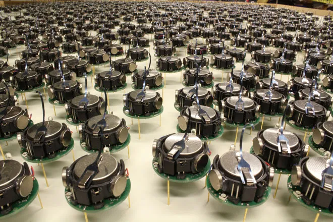

Abstract
- Humans interact with the space around them by using their senses to guide themselves. But what if there were an environment that one needed to navigate, but it was too dangerous or the person was compromised in some way? To implement the environmental mapping a convolutional neural network was used to identify objects, transformation techniques were used to identify how far an object was from the robot agent, and a depth first search algorithm was used to visit each position in a simulated arena. The implementation discussed was able to visit each node in a simulated environment, detect possible obstructions, and store the identified objects with reasonably accuracy.
Introduction
- The team wanted to implement and improve the world of SWARM robotics using computer vision methodologies to detect obstacles and overcome them. Search and rescue missions for the thousands people who are stuck in various dangerous situations can be considered the ultimate application, since the robots would map the various and identify the obstacles. The results showed that the integration Computer vision and SWARM robotics can be used for identification challenges in various terrains, and the robots were able to move past and map the whole area they were placed in. This is an evolving method of solving the problem of environmental mapping problems such as Search and Rescue operations, as it decreases the direct involvement of human lives, guiding disabled peoples through rooms, and more.
Problem Statement
The team would like to use a swarm community of robots connected to a master control unit to navigate and map a course of obstacles through object detections protocol and predicting collisions of the swarm to complete the course. The swarm will use mounted cameras to map the layout of the test course while the master properly navigates each of the agents. This project can be extended to situations to map rooms for people needing assistance, search and rescue operations, and schedule movements for a community of robots.

Approach
- Multiple simple robots will be simulated in a testing arena with walls and obstacles to impede the path to the end. A master unit will be used to plan the paths for each robot to take, communicating simple directions, such as turns, to each of the robots to guide them through the field. The master unit will be fitted with a camera to make use of computer vision techniques to detect obstacles and positions of the robots in the field.
- The whole code can be split into 3 main sections:
- Object Detection - This is the main Computer Vision aspect of the project, where a trained model is used to identify the obstacle that would be in front of the robot. To achieve good and consistent results, ResNet50 was used to get a base model that works well. Then model was then trained using Pascal VOC 2012, with all 20 of the classes included in the model. It was trained for 50 epochs, with the best resulting Model having an accuracy of ~91%. The model is then loaded into the main environment mapping program. The model is used when any of the robots encounter an obstacle, where the model will give confience scores for the objects detected in the image. The detecting program is restricted to 3 classes for testing purposes. This is due to the testing images being from a real-world grid environment, since that would give a more realistic indoor environment to the actual eventual application. The output that is fed into the environmental mapping is a results tuple, that contains the Label/Objects detected with the confidence scores for the 3 restricted classes for the set test case, being "Chair", "DiningTable" and "Sofa".
- Depth Estimation -
- Search Algorithm - The search algorithm is the backbone of the robotic exploration. The algorithm the team chose to use was a Depth First Search algorithm, to ensure that each node was visited in a manner that would make sense in a physical situation. When a robot reachs a node, it will use the aforementioned depth estimation code to determine if movement is possible to the front, left, or right or the current position. In this simulated environment, the bounds of the arena are known and directly passed in to the detection code to help determine the valid movements. The movements are then used to search for the next nodes in the grid to explore. As long as these nodes are not visited, the robot will attach the node to its frontier. If the node is obstructed, meaning that the direction is not a valid movement, it will attempt to identify the object in the way. This is accomplished using the aforementioned object detection code. The results of the object detection will be appended to the obstacle node. This set of commands repeats for each robot in the swarm for each loop. The loop will repeat for as long as any robot has nodes in its frontier. Once a robot has an empty frontier, it will remain dormant. The code ends once each robot has finished exploration.
Experimentation and Results
Object Detection Testing
- Testing and training the model was a straight forward process. The Pascal VOC 2012 dataset was split into the Training Dataset and the Validation dataset.
Depth Estimation Testing
Depth First Search Algorithm Testing
SWARM Sizing Impact on Exploration Time
Intended Testing and Experimentation
These were the initial intended experiments, but as the project progressed, the team deviated and made major modifications to the overall architecture. These are left here are artifacts of proposal, these can be used for future developments and proper reporting of the project.
Object Detection Testing
SWARM Robotics Testing
- Movement Testing (1 to 3 spaces [Predefined in programming])
- Move Forwards
- Move Left
- Move Right
- Move Backwards
- Object Detection
- Communication between robots for detection of the same objects and avoiding multiple entries of the same object
- Recognizing each other and not classifying each other as obstacles
- Swarm Correspondence
- Correspondence between robots about location, and the area of the arena
Combination Testing
- Movement:
- Evading obstacle - Checking if the robot can make any evasive maneuvers
- Concise evasion - Checking if the robot’s evasive maneuvers are ideal for evasion and do not go too far out of the way
Experiment Setup
The experiment involves an environment designed with walls, obstacles, and mobile robots. These robots will navigate the environment and interact with obstacles. The obstacles will include various objects such as wall sections, cones, solid blocks, and other relevant structures provided by the software to simulate real-world scenarios.
To aid in navigation, a master camera will be positioned at the midpoint of the arena. This camera will capture the positions of both the robots and the obstacles and transmit this data to the robots, facilitating communication and coordination among them.
Dataset
The dataset will be generated in a simulation environment and will consist of feature embeddings for both objects and robots. These feature embeddings will be used for:
- Obstacle Identification: Feature embeddings of objects like walls and cones will be used for detecting them as obstacles.
- Edge Detection: Embeddings will help perform edge detection on obstacles to assist in navigation.
- Robot Recognition: The robots will also have their own feature embeddings to differentiate them from the obstacles.
Data collection will start with manual runs, using recordings from the master camera. The dataset will then be used to train a simple Convolutional Neural Network (CNN) for feature detection and recognition.
Two approaches will be tested:
- CNN for Feature Detection: The CNN will be applied to both robots and obstacles.
- Hybrid Approach: The CNN will focus on identifying the robots, while edge detection will be used for identifying obstacles. A more effective approach will be implemented.
Expected Results
The goal of the experiment is to implement feature extraction and recognition for swarm robots, enabling them to map and navigate unknown environments. This method has potential applications in industrial automation, where robots can autonomously map areas and create optimized paths for future operations.
By the end of the experiment, the robots should be capable of:
- Detecting and identifying obstacles in an unknown environment.
- Locating themselves within the environment.
- Mapping the area for future navigation.
Uncertainties and Constraints
There are a few uncertain outcomes and constraints:
- Path Planning Efficiency: The effectiveness of the path planning algorithms and how well they perform in real-world operations is uncertain.
- Master Camera Configuration: The configuration of the master unit and how it interacts with the robots will need careful attention.
- Robot Awareness: It may be necessary to determine what additional sensors or components should be included in the robots to enhance their awareness of the surroundings, beyond the data provided by the master camera.